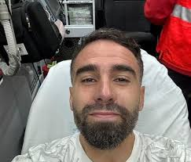

أحمد العلوي .. هل يعود؟

تغريدة نشرها اللاعب الكبير أحمد العلوي كتبها ليطمئن محبيه بأنه بخير وأنه بدأ في استعادة صحته.... وأوضح المدرب خورشيه في مؤتمر صحفي عندما سئل عن عودة العلوي إلى الملاعب : ذلك صعب لكنه ليس مستحيلا ، أصيب العلوي في مباراة ضد نادي الربيع ضمن الملحق المؤهل لدوري أبطال أوروبا.
📸 alalwe_468